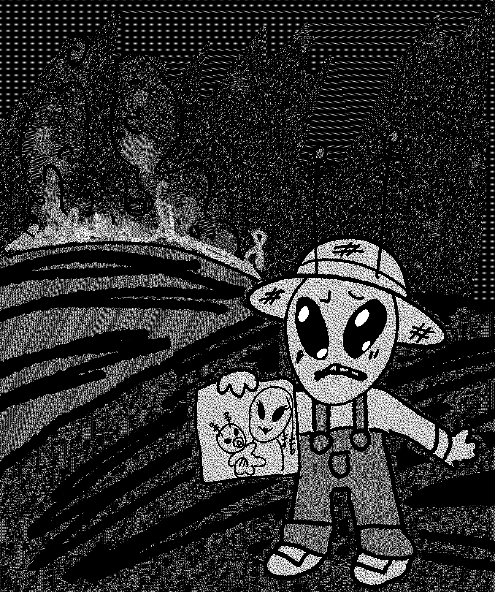

What's black and white and read all over? BIG OL' NEWS.
REAL news REAL people REAL fear REAL feeling REAL reality
What is Big Ol' News: extended reports? It's a newspaper! One that releases both digitally directly to your email inbox, and physically to your regular mailbox! The digital version is always 100% FREE and previous copies are always archived. The physical version costs a small amount to cover printing and shipping and contains bonus features for the truly dedicated news reader!
You can read copies of past digital editions at the archive link! You can learn how to submit to the paper at the submit link! You can subscribe to email distribution for free at the subscribe link! You can purchase physical prints at the physical link! Wahoo!
Oh, also, you can buy ads at $5 per square inch of page!
FEATURED ARTICLE
Local Crop Farmer Victim of Arson
by SCRAMPLEPEANITS
An up and coming crop farmer, Alien Jones suffered major losses this week. An angry mob burned their entire harvest. The townspeople say that Jones was trying to "phone the mothership" with the goal of "abducting and probing" all human life. BON:er reached out to the farmer for comment. Alien Jones says that the townsfolk saw his crop circles, which were a message to his wife and child. "I wanted to update my wife about human celebrity gossip and the human woman fashion trends she loves so much." He may be from out of this world, but he is deserving of a life on it just like anyone else in his community. A GalaxyFundMe has been opened for the Jones family and they are optimistic and hopeful for the future.